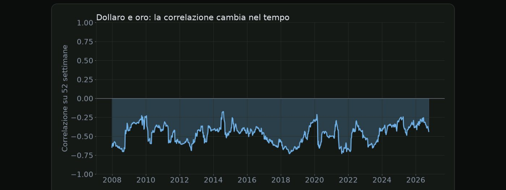
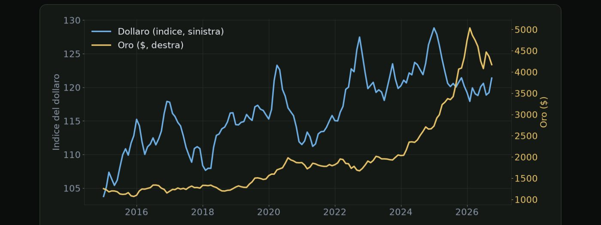
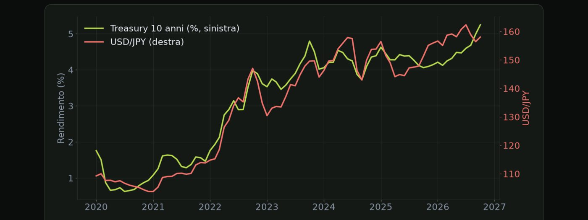
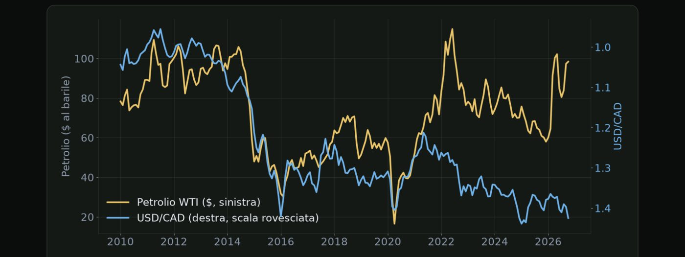
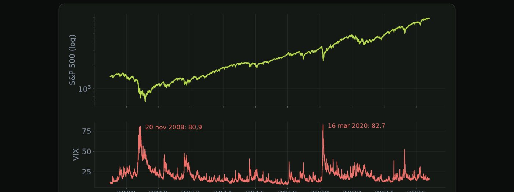
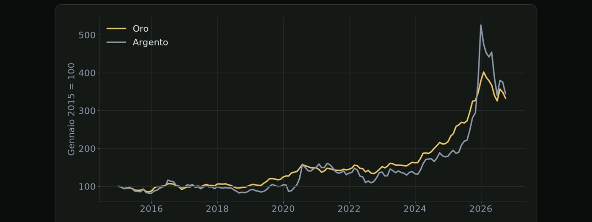

Materiale educativo, non consulenza finanziaria. Il trading con leva su forex, CFD e futures comporta un rischio elevato: puoi perdere tutto il capitale. Numeri, esempi e simulazioni non prevedono risultati futuri.
Cosa vuol dire che due asset sono correlati, e perché non bisogna fidarsi troppo.
In questo modulo vediamo come si muovono i mercati gli uni rispetto agli altri. Perché quando sale il dollaro spesso scende l'oro? Perché lo yen sale quando le borse crollano? Prima di entrare nei singoli casi, in questa lezione capiamo cos'è una correlazione, e perché non va mai presa come una certezza.
| Valore | Significato |
|---|---|
| +1 | si muovono sempre nella stessa direzione |
| 0 | nessun legame stabile |
| −1 | si muovono sempre in direzioni opposte |
| Nella pratica | valori intermedi, che cambiano nel tempo |
Le correlazioni cambiano per tre motivi principali. Il primo è che cambia il motore del mercato. Nei periodi dominati dall'inflazione certi asset si muovono insieme, nei periodi dominati dalla paura di una recessione se ne muovono insieme altri. Il secondo sono gli eventi straordinari. Nelle crisi più acute molte correlazioni saltano, perché tutti vendono tutto per procurarsi liquidità, come vedremo nel modulo sui beni rifugio. Il terzo sono i nuovi protagonisti. Quando un grande operatore inizia a comprare o vendere in modo costante, come le banche centrali con l'oro negli ultimi anni, i legami storici possono indebolirsi.

Ecco la correlazione tra dollaro e oro calcolata sulle ultime cinquantadue settimane, dal 2008. È quasi sempre negativa, in media meno zero virgola quarantasette, ma non è mai ferma: nel 2014 si avvicina a meno zero virgola due, quasi nessun legame, mentre nel 2018 arriva a meno zero virgola settantatré. Lo stesso numero, calcolato in periodi diversi, racconta storie diverse.
| Normalmente | quando le azioni scendono, i titoli di Stato salgono |
| Nel 2022 | inflazione alta e tassi in forte rialzo |
| Risultato | azioni e obbligazioni scendono insieme |
| Lezione | una diversificazione basata sul passato può non proteggere |
Perché quando il dollaro sale l'oro spesso scende, e quando non succede.
La correlazione più citata tra i trader è quella tra il dollaro e l'oro. In questa lezione vediamo perché esiste, come si misura, e in quali casi può non funzionare.
Il legame ha tre spiegazioni principali. La prima è che l'oro si scambia in dollari. Quando il dollaro si rafforza, per chi compra con euro, yen o altre valute l'oro diventa più costoso, e la domanda tende a calare. La seconda riguarda i tassi. Quando i tassi americani salgono, il dollaro rende di più, mentre l'oro non rende nulla, e alcuni investitori spostano denaro dall'oro al dollaro. La terza è che per molti investitori dollaro e oro sono due modi alternativi di cercare sicurezza, e quindi a volte competono tra loro.
Come si osserva questo legame in pratica? Si usa l'indice del dollaro, chiamato DXY, che misura il dollaro contro un paniere di sei valute principali, dove l'euro pesa più della metà. Mettendo sullo stesso grafico il DXY e l'oro, si vede spesso che si muovono in direzioni opposte. Il legame è particolarmente visibile nei giorni dei dati americani importanti. Un dato forte spinge su il dollaro e i rendimenti, e l'oro tende a scendere, e viceversa.

Ecco l'indice del dollaro, in blu, e l'oro, in giallo, dal 2015. Nel breve periodo spesso si muovono al contrario. Ma guardate gli ultimi anni: il dollaro resta forte, e l'oro sale lo stesso, da circa milleduecentocinquanta dollari a oltre quattromila. Quando entra in gioco un motore più forte, come gli acquisti delle banche centrali, il legame con il dollaro passa in secondo piano.
Ci sono però casi in cui il legame si rompe. Nei momenti di paura estrema, dollaro e oro possono salire insieme, perché sono entrambi considerati rifugi. Quando la domanda di oro arriva da fuori degli Stati Uniti, per esempio da banche centrali o da investitori asiatici, l'oro può salire anche con un dollaro forte, come si è visto in diversi momenti dal 2022 in poi. E nelle crisi di liquidità più acute, quando tutti vendono tutto, può scendere anche l'oro insieme agli altri asset, come vedremo nel prossimo modulo.
Perché il dollaro yen segue così da vicino i rendimenti americani.
Tra tutti i cambi, il dollaro yen è forse quello più legato ai tassi di interesse. Per anni il Giappone ha avuto tassi vicini allo zero o negativi, mentre quelli americani salivano e scendevano. In questa lezione vediamo come questo crea uno dei legami più chiari dei mercati.
Il meccanismo è legato al differenziale dei tassi, che abbiamo visto nel modulo due. Per molti anni i tassi giapponesi sono rimasti vicini allo zero, o addirittura sotto zero tra il 2016 e il 2024. Con i tassi giapponesi quasi fermi, è stato soprattutto il movimento dei tassi americani a decidere quanto fosse ampio il differenziale. Il risultato è che il dollaro yen ha seguito molto da vicino i rendimenti americani. Quando i rendimenti salivano, il dollaro yen tendeva a salire, e quando scendevano tendeva a scendere.
| Fed | tassi alzati rapidamente durante il 2022 |
| Banca del Giappone | tassi negativi e controllo dei rendimenti |
| Differenziale | in forte aumento |
| USDJPY | da circa 115 a oltre 150 in pochi mesi |

Ecco il decennale americano, in verde, e il cambio dollaro yen, in rosso, dal 2020. A gennaio 2021 il rendimento è intorno all'uno per cento e il cambio a centoquattro. Poi i rendimenti americani salgono, mentre in Giappone restano bassi, e il dollaro yen sale con loro, fino a centosessantadue a luglio 2026. In questo periodo la correlazione tra le due linee è altissima: zero virgola novantasette.
Cosa significa per chi fa trading su questo cambio? Prima di operare sul dollaro yen, conviene dare un'occhiata al rendimento del decennale americano, perché spesso anticipa o accompagna il movimento. I dati americani muovono il dollaro yen quasi quanto l'euro dollaro, proprio perché passano dai rendimenti. E le riunioni della Banca del Giappone possono dare movimenti molto ampi, soprattutto quando cambia la politica dopo anni di immobilità.
Petrolio e dollaro canadese, metalli e dollaro australiano.
Alcuni paesi esportano grandi quantità di materie prime, e le loro valute tendono a seguire i prezzi di ciò che vendono. In questa lezione vediamo i due casi più noti, il dollaro canadese e il dollaro australiano, e cosa significano per chi fa trading.
| Valuta | Legata a | Perché |
|---|---|---|
| Dollaro canadese (CAD) | petrolio | il Canada è un grande esportatore di petrolio |
| Dollaro australiano (AUD) | minerale di ferro, metalli | l'Australia esporta molte materie prime, soprattutto in Cina |
| Dollaro neozelandese (NZD) | prodotti agricoli e latticini | esportazioni alimentari |
| Corona norvegese (NOK) | petrolio e gas | grande produttore europeo di energia |
Il legame funziona così. Quando i prezzi delle materie prime salgono, il paese esportatore incassa più denaro dalle vendite all'estero. Le imprese convertono questi incassi nella valuta locale, e questo aumenta la domanda della valuta. Inoltre l'economia ne beneficia, e la banca centrale è meno propensa a tagliare i tassi. Tutti questi fattori tendono a rafforzare la valuta.

Ecco il petrolio, in giallo, e il cambio dollaro canadese, in blu con la scala rovesciata. Dal 2010 al 2016 le linee si muovono quasi insieme: quando il petrolio crolla da centosei dollari, a metà 2014, a circa trenta, all'inizio del 2016,, il dollaro americano passa da uno virgola zero otto a uno virgola quarantadue contro il canadese. Dal 2020 però il legame quasi sparisce. Le correlazioni tra materie prime e valute esistono, ma vanno ricontrollate.
Anche qui ci sono dei limiti da conoscere. Il legame non è automatico. Nel breve periodo contano di più le decisioni della banca centrale e i dati interni, come lavoro e inflazione. Per il dollaro australiano, contano molto i dati sull'economia cinese, perché la Cina è il principale cliente dell'Australia. Infine queste valute tendono a scendere nelle fasi di paura sui mercati, perché sono legate alla crescita globale. Ne parleremo nella prossima lezione, dedicata al risk on e al risk off.
Quando il mercato cerca rendimento e quando cerca sicurezza.
Nei commenti di mercato senti spesso due espressioni inglesi, risk on e risk off. Descrivono l'umore generale dei mercati, cioè se gli investitori sono disposti a prendere rischi o se cercano sicurezza. In questa lezione vediamo cosa succede ai vari asset nelle due fasi.
| Borse | su |
| AUD, NZD, CAD | su |
| Yen, franco | giù |
| Rendimenti | tendono a salire |
| Borse | giù |
| AUD, NZD, CAD | giù |
| Yen, franco, oro | su |
| Titoli di Stato | comprati come rifugio |
Nella fase di risk on, cioè di propensione al rischio, gli investitori sono ottimisti e cercano rendimento. Le borse salgono, le valute legate alla crescita come il dollaro australiano, neozelandese e canadese si rafforzano, mentre yen e franco svizzero tendono a indebolirsi. I rendimenti dei titoli di Stato tendono a salire, perché si vendono titoli sicuri per comprare asset più rischiosi. Nella fase di risk off, cioè di avversione al rischio, succede il contrario. Le borse scendono, le valute legate alla crescita perdono terreno, mentre yen, franco svizzero e spesso oro si rafforzano. I titoli di Stato più sicuri vengono comprati come rifugio, e i loro rendimenti scendono.

Ecco l'S&P 500, in alto, e il VIX, l'indice della paura, in basso. Il VIX ha una media di circa venti, ma nelle fasi di panico esplode: il venti novembre 2008 arriva a ottanta virgola nove, il sedici marzo 2020 a ottantadue virgola sette. In quelle settimane la borsa scende con violenza: nel 2020 l'S&P 500 perde circa un terzo in un mese. Sono i momenti di risk off puro.
Cosa provoca il passaggio da una fase all'altra? Possono essere i dati economici. Una serie di dati deboli fa temere una recessione, e il mercato passa in modalità risk off. Possono essere eventi improvvisi, come una guerra, il fallimento di una banca o uno shock politico. E possono essere le banche centrali. Una banca centrale molto più dura del previsto può spaventare i mercati, mentre segnali di tagli possono riaccendere la propensione al rischio.
Come si usa questo concetto in pratica? Come lettura del contesto. Un colpo d'occhio agli indici azionari, allo yen e all'oro ti dice in pochi secondi qual è l'umore del giorno. Come controllo della coerenza delle tue posizioni. Se sei lungo sul dollaro australiano, lungo sull'indice americano e corto sullo yen, in realtà hai tre posizioni che dipendono tutte dallo stesso umore. E come avvertimento. Il passaggio al risk off è di solito più rapido e violento del passaggio al risk on, perché la paura si diffonde più velocemente della fiducia.
Argento, platino, dollaro australiano e neozelandese: perché si muovono spesso con l'oro.
Chi fa trading sull'oro nota presto che alcuni strumenti si muovono spesso nella stessa direzione. L'argento, il platino, il dollaro australiano e quello neozelandese. In questa lezione vediamo perché succede, quanto è forte il legame per ciascuno, e quando si rompe.
| Strumento | Legame | Perché |
|---|---|---|
| Argento · XAG/USD | forte | metallo prezioso, stessi motori |
| Platino · XPT/USD | medio | prezioso, ma soprattutto industriale |
| Dollaro australiano · AUD/USD | medio | l'Australia produce molto oro |
| Dollaro neozelandese · NZD/USD | più debole | segue spesso l'AUD |
C'è un motivo che spiega gran parte di questo legame, ed è il dollaro. Oro, argento, dollaro australiano e dollaro neozelandese sono tutti quotati contro il dollaro americano. Hanno quindi lo stesso denominatore. Quando il dollaro si indebolisce, per esempio dopo un dato americano debole, tutti tendono a salire nello stesso momento. E quando il dollaro si rafforza tendono a scendere insieme. Per questo una buona parte della correlazione non viene dai metalli, ma dal dollaro che hanno in comune.
Vediamo meglio l'argento, che è il parente più stretto dell'oro. In percentuale l'argento si muove spesso più dell'oro, sia al rialzo sia al ribasso. Per questo molti lo considerano un oro più nervoso. Il motivo è che più di metà della domanda di argento viene dall'industria, per esempio dai pannelli solari e dall'elettronica. Così l'argento risente sia dei motori dell'oro sia del ciclo economico. Un indicatore molto seguito è il rapporto tra oro e argento, cioè quante once d'argento servono per comprare un'oncia d'oro. Quando l'economia preoccupa il rapporto tende a salire, e a marzo del 2020 ha superato quota cento.

Ecco oro e argento dal 2015, partendo entrambi da cento. Si muovono nella stessa direzione: la correlazione tra le variazioni mensili è di zero virgola settantadue. Ma l'argento ha movimenti più ampi, in salita e in discesa. Nel periodo l'oro si moltiplica per tre virgola tre, l'argento per tre virgola cinque, con oscillazioni molto più forti. Con lo stesso lotto, l'argento rischia di più.
Questi legami però non valgono sempre. Nelle fasi di paura acuta l'oro sale come rifugio, mentre dollaro australiano e neozelandese scendono insieme alle borse, come abbiamo visto nella lezione sul risk off. Quando l'economia rallenta, argento e platino soffrono più dell'oro, perché la domanda industriale diminuisce. E ogni strumento ha le sue notizie locali. Le decisioni della banca centrale australiana, i dati cinesi o i problemi nelle miniere possono muoverlo anche quando l'oro resta fermo.
Quando oro e borsa americana salgono insieme, e come usare queste correlazioni.
Molti pensano che oro e borsa vadano sempre in direzioni opposte, perché l'oro è un rifugio. In realtà negli ultimi anni oro e borsa americana sono saliti spesso insieme. In questa lezione capiamo perché, e poi vediamo come usare tutte queste correlazioni nel trading di ogni giorno.
| Motore | tassi reali in calo, dollaro debole |
| Quando | attese di tagli della Fed, più liquidità |
| Lettura | denaro meno caro per tutti |
| Motore | paura, crisi, geopolitica |
| Quando | fasi di risk off |
| Lettura | l'oro fa da rifugio |
Nella prima fase oro e borsa salgono insieme. Succede quando il motore principale sono i tassi. Se il mercato si aspetta tagli della Fed, i rendimenti reali scendono e il dollaro si indebolisce. Il denaro costa meno per tutti, e questo sostiene sia l'oro sia le azioni. Nella seconda fase vanno in direzioni opposte. Succede quando il motore è la paura, per esempio in una crisi o in una tensione geopolitica. Le borse scendono, mentre l'oro sale come rifugio.
| Periodo | Oro | Borsa USA (S&P 500) |
|---|---|---|
| Marzo 2020 | giù per qualche giorno | crollo |
| 2022 | circa invariato | circa −19% |
| 2024 | circa +27% | circa +23% |
| Indice | Future · micro | CFD tipico |
|---|---|---|
| S&P 500 | ES · MES | US500 |
| Nasdaq 100 | NQ · MNQ | US100 |
| Dow Jones | YM · MYM | US30 |
Perché i futures sono importanti per chi segue l'oro? Perché si scambiano quasi ventiquattro ore su ventiquattro, dalla domenica sera al venerdì, con una breve pausa ogni sera. Quindi puoi confrontarli con l'oro in qualsiasi momento. Perché reagiscono subito ai dati americani delle quattordici e trenta, prima che apra Wall Street, che di solito apre alle quindici e trenta ora italiana. Nei minuti del dato puoi vedere in tempo reale se oro e futures si muovono insieme oppure in direzioni opposte. E perché il Nasdaq è di solito l'indice più sensibile ai tassi, proprio come l'oro. Per questo, quando il motore sono i tassi, oro e Nasdaq tendono a muoversi insieme più degli altri indici.
Il primo uso pratico è capire cosa sta muovendo l'oro, guardando i suoi parenti. Se oro, argento e dollaro australiano salgono insieme, il movimento è ampio, e di solito è guidato dal dollaro e dai tassi. Se l'oro sale mentre il dollaro australiano e le borse scendono, il movimento è guidato dalla paura, e l'oro sta facendo da rifugio. Se oro e borse salgono insieme, il motore sono probabilmente i tassi reali in calo e la liquidità. Sapere qual è il motore ti dice quali notizie potrebbero invertire il movimento.
Il secondo uso pratico riguarda il rischio, ed è il più importante. Essere lunghi su oro, argento e dollaro australiano non è diversificazione. È una sola scommessa contro il dollaro, e va trattata come un'unica posizione, come vedremo nella prossima lezione. L'argento si muove di più dell'oro, quindi a parità di rischio serve un lotto più piccolo, calcolato sulla distanza dello stop. Sui futures il valore del punto è fisso. Per esempio sullo S&P 500 un punto vale cinquanta dollari sul contratto intero e cinque sul micro, quindi il numero di contratti va calcolato partendo dallo stop. Se l'oro sale ma i suoi parenti non lo seguono, consideralo un avviso e sii più prudente. Non è un segnale per entrare o per uscire, ma un motivo per non aumentare il rischio. E ricontrolla spesso. Queste correlazioni cambiano nel tempo, quindi conviene guardarle sugli ultimi mesi, non su quello che succedeva anni fa.
Come le correlazioni moltiplicano il rischio senza che te ne accorga.
Chiudiamo il modulo sulle correlazioni con la lezione più importante per la gestione del rischio. Molti trader pensano di essere diversificati perché hanno posizioni su strumenti diversi, e invece stanno facendo la stessa scommessa più volte. Vediamo come accorgersene, e cosa fare.
| Posizione 1 | lungo EURUSD, rischio 1% |
| Posizione 2 | lungo GBPUSD, rischio 1% |
| Posizione 3 | lungo oro, rischio 1% |
| In realtà | tre scommesse contro il dollaro: rischio vicino al 3% su un solo dato USA |
Come ci si accorge di questo problema? Con tre domande semplici. Per ogni posizione chiediti qual è l'idea di fondo, cioè cosa deve succedere perché funzioni. Raggruppa le posizioni per fattore comune, per esempio il dollaro, l'umore dei mercati, i tassi o il petrolio. E somma il rischio di ogni gruppo, trattandolo come se fosse un'unica posizione.
Una volta capito il problema, la soluzione è semplice. Stabilisci un tetto di rischio per ogni fattore, per esempio non più del due per cento complessivo su posizioni che dipendono dal dollaro. Se vuoi comunque avere più posizioni correlate, dividi il rischio tra loro, per esempio tre posizioni con lo zero virgola sei per cento ciascuna invece dell'uno. E ricorda che un solo dato può colpire tutto il gruppo nello stesso momento, quindi la regola diventa ancora più importante nei giorni del calendario più carichi.
Spunta ogni punto solo se sapresti spiegarlo a voce a un altro trader.
Materiale educativo, non consulenza finanziaria. Il trading con leva su forex, CFD e futures comporta un rischio elevato: puoi perdere tutto il capitale. Numeri, esempi e simulazioni non prevedono risultati futuri. · riskly.trade